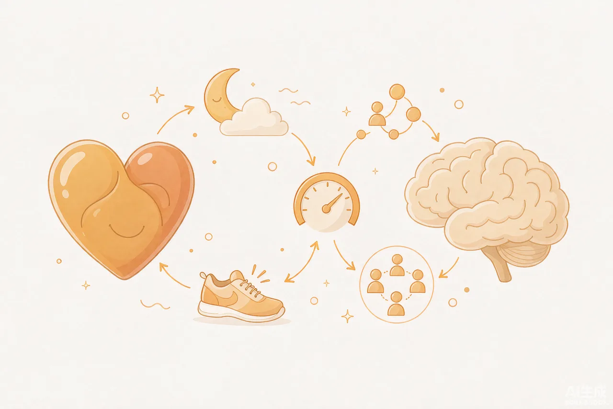
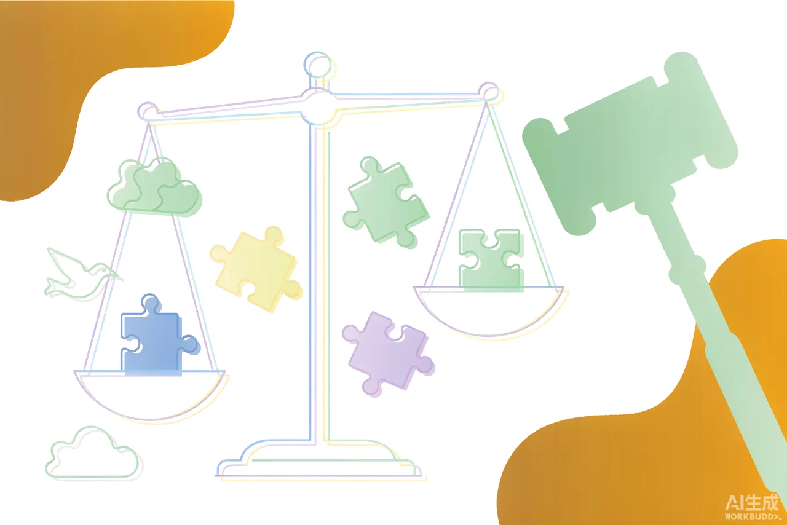
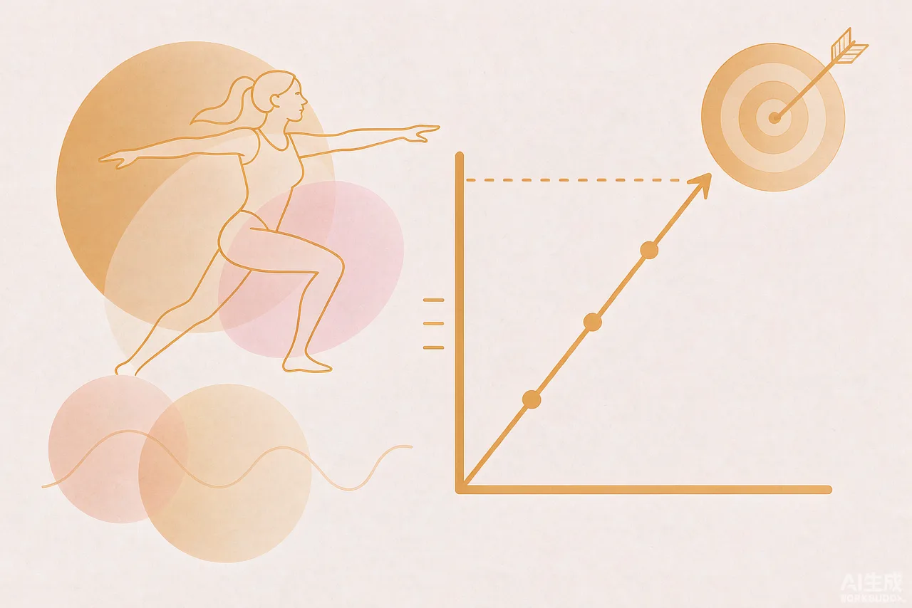
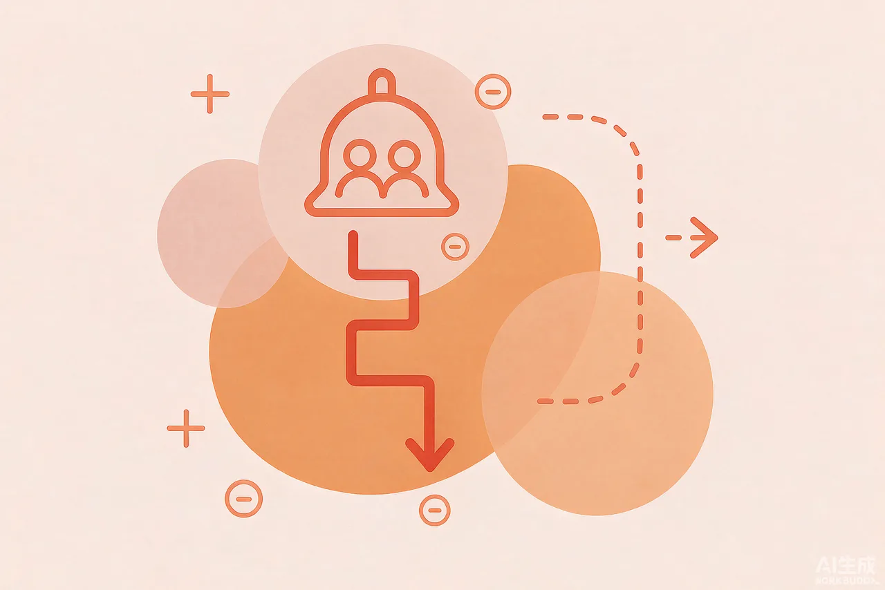
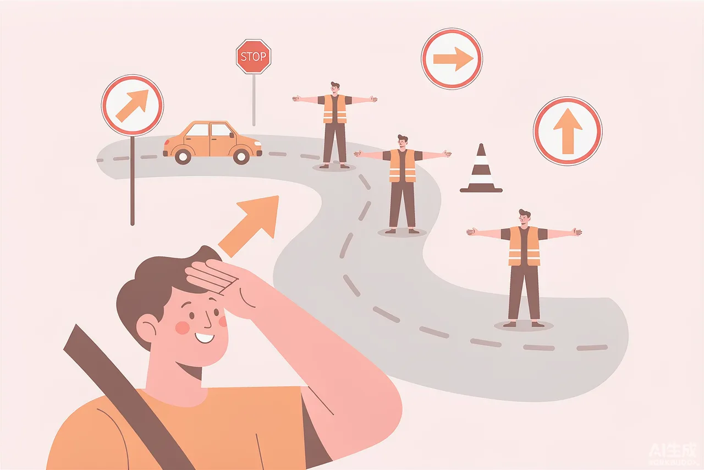

普通心理学
心理学知识体系的总览与入门
PSYCHOLOGY · 学科全景
A Map of the Psychological Sciences
从基础机制到应用场景，41 个分支一次看清
心理学既研究感知、记忆与情绪等基本心理过程，也走进课堂、组织、临床与司法现场。这里把各分支按「基础 — 应用 — 交叉新兴」三层展开，每一分支都单独成页，标注核心议题、常用方法、应用场景与相邻方向，方便按图索骥。
输入关键词，或按类别筛选；按 / 可快速定位输入框
共 41 个分支
基础心理学涵盖普通、实验、认知、生理、发展等分支，介绍心理学的基本概念、研究方法与理论源流，为各专门领域提供共同的知识基础与理论框架。
应用心理学将心理学原理与方法用于教育、组织、健康、司法、消费及工程等现实场景，关注人与环境的互动，以证据为基础改善适应、绩效与福祉。

聚焦心理障碍的评估、理解与干预

关注正常发展中的适应与成长议题

研究学习与教学过程中的心理规律

在学校场景中支持学生心理与学业适应

用心理学优化人与工作的匹配

研究心理因素与健康的双向关系

研究消费者决策与行为的心理机制

探究广告信息影响态度与行为的规律

研究法律活动中的心理现象与行为

研究犯罪行为的心理成因与预防

研究运动情境中的心理与行为规律

优化人—机—环境系统的匹配与安全

研究人与物理环境之间的相互作用

以社区为单元促进心理健康与社会融入

研究军事情境中的心理与行为规律

研究交通参与者的心理与行为规律

研究职业选择、发展与适应的心理规律
基础板块解释心理现象与研究方法，应用板块对应真实场景，交叉板块呈现与神经科学、计算和文化研究结合的新方向。
每个分支页面用统一结构拆解：主题插画、核心议题、经典研究、争议前沿、动手练习、方法场景与延伸阅读。
每页底部的「相邻分支」给出三条跨领域线索，适合把孤立知识点连成网络。